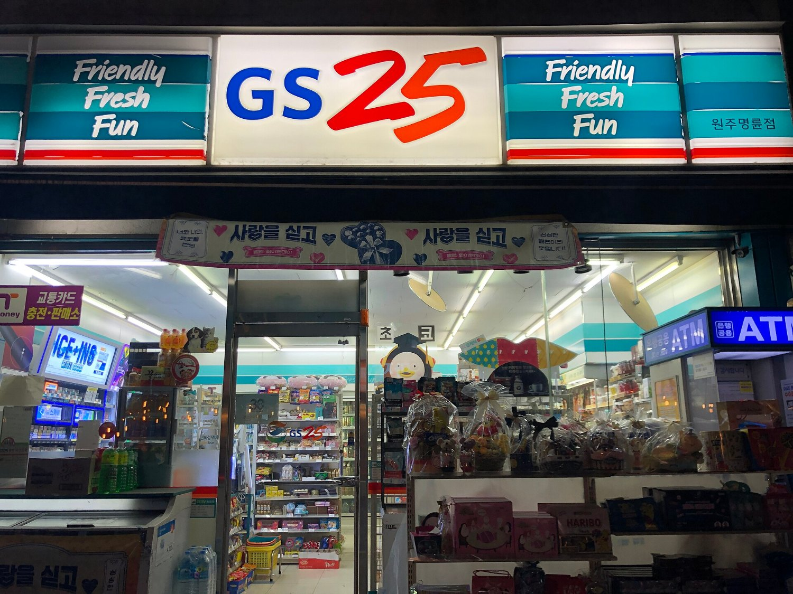
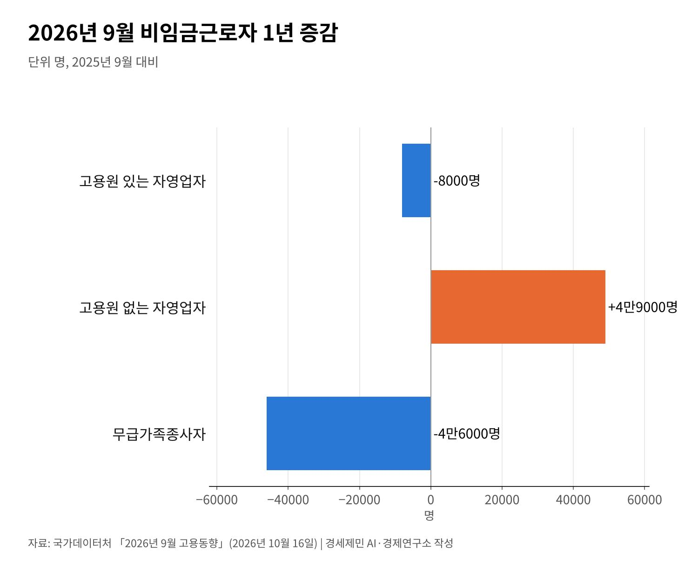

[한국경제 8대 불편한 진실⑤] 자영업자 빚 1095조원, 혼자 일하는 사장이 늘었다
자영업 대출 금융권 전체의 28.5%, 연체율 2.04%로 10년 9개월 만에 가장 높아
고용원 있는 사장 8000명 줄고 혼자 일하는 사장 4만9000명 늘어
가맹점 37만9739곳, 배달앱 수수료 법안 셋은 국회에 걸려 있다
AI경세제민=김갑봉 기자 | 자영업자가 금융권에서 빌린 돈은 1095조5000억원이다(2026년 3월 말). 한국은행이 6월 낸 금융안정보고서 수치다. 전체 금융권 가계·기업대출의 28.5%가 자영업자 몫이다.
빚을 못 갚는 사람도 늘었다. 자영업자 대출 연체율은 2.04%로 2015년 6월 말 이후 10년 9개월 만에 가장 높다. 소득과 신용이 낮은 취약 자영업자 쪽은 더 가파르다.
게으르거나 무능해서 진 빚만은 아니다. 가맹본부에 내는 비용과 배달 플랫폼 수수료가 매출에서 먼저 빠져나간다. 그 구조를 한국은행과 국가데이터처, 공정거래위원회 통계로 짚는다.

빚 1095조원, 연체율 10년 9개월 만에 최고
자영업자 빚은 소득보다 훨씬 무겁다. 한국은행이 국회에 낸 자료로 소득 대비 부채 비율은 343.8%다(2025년 9월 말). 한 해 소득을 3년 넘게 한 푼도 안 쓰고 모아야 갚는 돈이다.
연체는 아래부터 번진다. 여러 곳에서 돈을 빌렸고 소득이 낮은 취약 자영업자 연체율은 2025년 3월 말 12.24%였다. 2013년 6월 이후 가장 높은 값이었다.
전체 연체율 2.04%는 숫자만 보면 작다. 그러나 2015년 이후 처음 보는 높이다. 금리가 올해 두 차례 올라 연 3.00%가 된 만큼 이자 부담은 당분간 줄기 어렵다.
직원 둔 사장은 줄고 혼자 일하는 사장은 늘었다
국가데이터처 9월 고용동향에서 고용원 있는 자영업자는 1년 전보다 8000명 줄었다. 고용원 없는 자영업자는 4만9000명 늘었다. 가게 일을 돕던 무급가족종사자는 4만6000명 줄었다.

직원을 두던 가게가 혼자 꾸리는 가게로 바뀌고 있다. 인건비를 감당하지 못하면 사장이 직원 몫까지 일한다. 노동시간은 늘고 가게 소득은 그대로인 구조다.
인천은 더 가파르다. 경인지방데이터청 9월 인천 고용동향에서 인천 자영업자는 28만2300명이다. 1년 새 2만6500명(8.6%) 줄었다.
같은 기간 인천 임금근로자는 3만5400명 늘었다. 가게를 접은 사장이 임금노동으로 옮겼는지는 이 통계로 알 수 없다.
가맹점 37만9739곳, 공개는 늘었고 협상력은 그대로
공정거래위원회 가맹사업 통계로 2024년 말 가맹점은 37만9739곳이다. 한 해 전보다 4.0% 늘었다. 편의점만 5만5927곳이다. 2025년 말 가맹본부는 9960곳, 브랜드는 1만3725개다.
가맹점주는 본부가 정한 필수품목을 본부에서 산다. 본부가 이 물품값에 얹는 이윤을 차액가맹금이라 한다. 점주에게는 원가처럼 보이지만 본부에게는 수익이다.
공개 의무는 늘었다. 2019년부터 본부는 정보공개서에 차액가맹금을 적어야 한다. 2024년 7월 3일부터는 필수품목 공급가를 어떻게 정하는지 가맹계약서에 적어야 한다. 알 권리는 생겼지만 값을 정하는 쪽은 여전히 본부다.
배달앱 수수료, 국회에 걸린 법안 셋
배달앱은 동네 가게의 두 번째 본부가 됐다. 중소벤처기업부와 동반성장위원회의 2025년 배달 3사 체감도 조사에서 입점 업체가 매긴 수수료 적정성은 100점 만점에 38.2점이다.
국회 정무위원회에는 배달앱 수수료 법안 셋이 걸려 있다(2026년 10월 14일 기준).
이강일 의원안과 박정훈 의원안은 수수료 총액을 15% 이하로 묶는다. 김남근 의원안은 영세 업체에 우대수수료율을 둔다. 셋 다 아직 국회를 넘지 못했다.
다른 나라는 계약 전에 무엇을 알려 주나
미국 연방거래위원회(FTC) 가맹 규칙은 본부가 23개 항목을 담은 공시 문서를 내게 한다. 예비 점주가 계약하거나 돈을 내기 최소 14일 전에 줘야 한다. 정보가 계약보다 먼저 가는 셈이다.
유럽연합(EU)은 디지털시장법(DMA)으로 거대 플랫폼 7곳을 게이트키퍼로 지정했다. 지정된 플랫폼은 자기 서비스를 앞세우거나 입점 업체를 묶어 두는 행위를 법으로 제한받는다. 플랫폼의 힘을 시장 크기로 재서 의무를 지운다.
자영업자 빚 1095조원은 사장 한 사람의 셈만으로 쌓이지 않았다. 혼자 버티는 사장이 늘고 연체율은 10년 만에 가장 높다. 매출 일부는 본부와 플랫폼으로 먼저 나간다.
빚을 개인의 실패로만 읽으면 해법도 개인의 몫으로 남는다. 비용이 어디로 얼마나 나가는지를 숫자로 드러내는 일이 그 첫 단추다.
참고문헌
기관 자료
- 한국은행, 「금융안정보고서(2026년 6월)」, 2026년 6월 24일. https://eiec.kdi.re.kr/policy/materialView.do?num=283152
- 국가데이터처, 「2026년 9월 고용동향」, 2026년 10월 16일. https://eiec.kdi.re.kr/policy/materialView.do?num=288191
- 경인지방데이터청, 「2026년 9월 인천광역시 고용동향」, 2026년 10월 16일(인천광역시 게시 2026년 10월 18일). https://www.incheon.go.kr/jobs/main/pst/list.do?pst_id=m_job_trend
- 공정거래위원회, 「2025년도 가맹사업 현황 통계」(서울시 누리집 전재), 2026년 4월 12일. https://news.seoul.go.kr/economy/archives/572148
- 미국 연방규정집, 「16 CFR Part 436 Disclosure Requirements and Prohibitions Concerning Franchising」. https://www.ecfr.gov/current/title-16/chapter-I/subchapter-D/part-436
- 유럽연합 집행위원회, 「Gatekeepers」(디지털시장법). https://digital-markets-act.ec.europa.eu/gatekeepers_en
언론 보도
- 김주형, "[금융안정보고서] 자영업 대출 1095.5조…취약차주 연체율 12.68%", 메트로경제, 2026년 6월 24일. https://www.metroseoul.co.kr/article/20260624500173
- "자영업자 연체율 10년 9개월 만에 최고", 세계일보, 2026년 6월 30일. https://www.segye.com/newsView/20260630516691
- "자영업자 소득 대비 부채 343.8%", SBS Biz, 2026년 2월 12일. https://biz.sbs.co.kr/amp/article/20000291452
- "자영업자 LTI", 뉴데일리, 2026년 2월 12일. https://biz.newdaily.co.kr/site/data/html/2026/02/12/2026021200221.amp.html
- "취약 자영업자 연체율 12.24%", 이투데이, 2025년 6월 25일. https://www.etoday.co.kr/news/view/2481978
- "취약 자영업자 연체율", 조세금융신문, 2025년 6월 25일. https://www.tfmedia.co.kr/news/article.html?no=191697
- "9월 취업자 11.3만명 증가", 이투데이, 2026년 10월 16일. https://www.etoday.co.kr/news/view/2636460
- "배달앱 수수료 상한 법안", CEO스코어데일리, 2026년 10월 14일. https://ceoscoredaily.com/page/view/2026101416510899041
- "배달앱 수수료 상한 법안", 파이낸셜뉴스, 2026년 9월 23일. https://www.fnnews.com/news/202609230610537492
- "차액가맹금 정보공개서 기재", 데일리안, 2019년 10월 17일. https://www.dailian.co.kr/news/view/834155/
- "필수품목 공급가 산정방식 계약서 기재", 아이뉴스24, 2024년 8월 28일. https://www.inews24.com/view/1757174
- "배달3사 체감도 조사", SBS Biz, 2026년 2월 5일. https://biz.sbs.co.kr/amp/article/20000289904
[사진 출처]
- [사진1] MatthieuRicard, 「2020-03-13 19.25.30 강원도 원주시 남원로527번길.jpg」, 2020년 3월 13일, 위키미디어 공용, CC0. https://commons.wikimedia.org/wiki/File:2020-03-13_19.25.30_강원도_원주시_남원로527번길.jpg
- [도표1] 경세제민 AI·경제연구소 작성. 자료 국가데이터처 「2026년 9월 고용동향」
※ 이 기사는 AI 프로그램 클로드를 활용해 작성했습니다.
관련기사
- [한국경제 8대 불편한 진실②] 인구 줄어도 집값은 오른다, 도쿄와 서울이 보여 준 것
- [한국경제 8대 불편한 진실③] 공무원연금 수급자 69만명, 적자는 일반회계가 메운다
- [한국경제 8대 불편한 진실④] 국민연금 소득대체율 43%, 평균 노령연금은 70만6150원
- [한국경제 8대 불편한 진실⑥] K방산 4사 영업이익 4조6324억원, 이익은 공급망 아래로 내려가나
저작권자 © AI경세제민 무단전재 및 재배포, AI학습 및 활용 금지